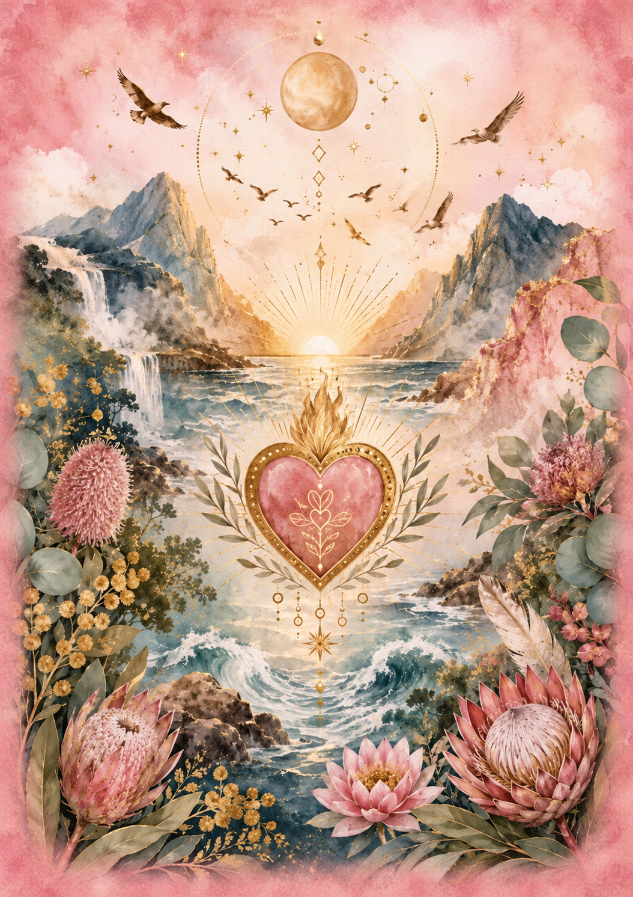

THE HEARTARA ORACLE · CREATED BY PENNY KINMAN
Return to
Your Heart
Created from my heart, with healing intention at its centre. A gentle invitation to return to the love, wisdom and wholeness within you.
These cards explore relationships, boundaries, grief, love, self-worth, intuition and growth. Their purpose is to support your own knowing, with space for your personal understanding.
Enquire about the oracle ↗Purchase details, stock and release timing are not yet confirmed.
MY FIRST ORACLE DECK
How the idea came to life.
Return to Your Heart grew from my healing work and a wish to offer people something they could return to in their own time. Early ideas included a card at each place setting during a Heartara gathering—a personal moment of reflection that could become part of a wider journey.
I have always loved oracle cards, but often found myself translating their spiritual messages into everyday language for friends and family. I wanted to create a deck that spoke to the things we actually live through: love, relationships, boundaries, grief, fear, self-worth, joy and the courage to begin again.
I began writing in July 2026. The words flowed intuitively, through a process I experienced as divinely guided. My nursing experience, Reiki, intuitive healing, Munay Ki and my own life journey all helped shape the messages. The healer in me wanted to encourage healing; the nurse in me wanted the words to feel grounded, compassionate and human.
HEALING IS AT THE HEART OF THIS DECK
From my heart.
Back to yours.
I created these cards with the intention of supporting healing, reflection and a gentle return to yourself. Reiki and healing intention have been consciously woven into their creation, alongside my love for the people who will one day hold them.
My hope is that a card can meet you in a moment when you need kindness, recognition or space to listen. It might offer a different way of seeing an experience, a question to sit with, or a reminder of the strength and love already within you.
Healing, to me, is remembering who we are beneath the layers of life. These cards invite you to feel, reflect and reconnect, without pressure to rush or become someone else. The cards are a companion to your own knowing. The healer is already within you.
A MILESTONE FROM MY HEART · 25 OCTOBER 2026
The first deck.
A heartfelt blessing.
My printed prototype is expected to arrive on Monday 26 October 2026. After so much love, writing and preparation, I am looking forward to holding these cards in my hands for the first time.
To honour their arrival, I plan to create a despacho—a ceremonial offering of gratitude, intention and connection with the Earth. Within that ceremony, I will hold the cards, their journey into the world and everyone who chooses a pack in my healing intentions.
My intention is to offer Reiki and a heartfelt blessing for every person who brings this deck into their life: that they may feel supported as they reconnect with their own heart, wisdom and capacity for healing. This healing intention is at the forefront of Return to Your Heart.
Arrival update shared 25 October 2026; delivery is expected, not yet confirmed. Release and purchase details will follow after the prototype has been reviewed.
COMING IN TIME · A CARD EACH WEEK
A little pause.
A weekly return.
In time, I would love to share a card here each week, with its message and an invitation to reflect. A moment to pause, notice what resonates and carry a little of that reflection into your everyday life.
There is no need to own a deck to join in. You are welcome to return to this space, take what feels meaningful and listen to your own response.
Weekly card reflections are planned and have not started yet.
Visit the Heartara journal →RETURN TO YOUR HEART · THE CARD & ITS REVERSE



46 CARDS · ONE GENTLE INVITATION
Your intuition comes first.
Become still. Take a breath. Choose intuitively. Notice the image, the title and your own first response before turning to the companion guidebook. There is no compulsory spread or correct number of cards.
The guidebook offers messages, reflections and affirmations. The two separate Yes and No bonus cards can be used apart from the 44 main cards, while leaving your choices in your hands.
EXPLORE THE THEMES
A place for all of you.
44 main cards
- 01Acceptance
- 02Affection
- 03Alignment
- 04Boundaries
- 05Breaking Free
- 06Communication
- 07Conflict
- 08Connection
- 09Courage
- 10Embracing the Dark
- 11Emotion
- 12Flow
- 13Forgiveness
- 14Freedom
- 15Friendship
- 16Grief
- 17Healing
- 18Hope
- 19Humility
- 20Inner Light
- 21Inspiration
- 22Joy
- 23Letting Go
- 24Liberation
- 25Magic
- 26Nature
- 27New Beginnings
- 28Open to Receive
- 29Open Your Eyes
- 30Patience
- 31Protection
- 32Reflection
- 33Return to Gratitude
- 34Return to Your Heart
- 35Sacred Pause
- 36Sacred Union
- 37Safe
- 38Self Worth
- 39Separation
- 40Shame
- 41Toxicity
- 42Trust
- 43Victory
- 44Wholeness
Separate bonus cards: 45 · Yes & 46 · No
Explore the themes held within the deck. The Return to Your Heart card and its reverse are shown above; weekly reflections will offer another way to connect with the messages over time.
FROM PENNY’S HEART TO YOURS
A companion.
A return to you.
For the latest information about the deck, contact Penny directly.
Ask Penny about the oracle ↗Text and card meanings © 2026 Penny Kinman. The deck’s card and cover artwork is AI-generated from Penny’s concepts and creative direction. The Return to Your Heart front and card back shown here are the artwork supplied by Penny.